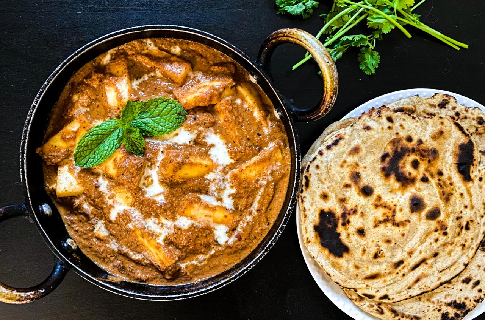

Shahi Paneer Recipe:

Ingredients:
For the Gravy:
- 250g (8 oz) paneer, cut into cubes
- 2 tablespoons ghee (clarified butter) or oil
- 1 large onion, finely chopped
- 1 tablespoon ginger-garlic paste
- 1/4 cup cashew nuts (soaked in warm water for 10-15 minutes)
- 1/4 cup melon seeds or poppy seeds (optional, can be skipped if unavailable)
- 1/4 cup yogurt (whisked)
- 1/2 teaspoon cumin seeds
- 2-3 green cardamom pods
- 2-3 cloves
- small cinnamon stick
- 1 bay leaf
- 1 tablespoon ginger (finely julienned or chopped)
- 1 tablespoon sugar (adjust to taste)
- 1/4 teaspoon red chili powder
- 1/2 teaspoon turmeric powder
- 1 teaspoon coriander powder
- 1 teaspoon garam masala powder
- Salt, to taste
- 1/2 cup water (or as needed for consistency)
- 1/2 cup fresh cream (for richness)
- 1-2 tablespoons rose water or kewra water (optional, for fragrance)
- Fresh cilantro (coriander leaves) for garnish
For Garnishing (optional):
- Slivers of almonds or pistachios
- Fresh cream drizzle
- Julienne ginger
- Fresh cilantro (coriander)
Instructions:
1. Prepare the Cashew Paste:
- Soak the cashews in warm water for 10-15 minutes to soften them. After soaking, grind them into a smooth paste using a little water. Set it aside.
2. Cook the Spices:
- Heat 2 tablespoons of ghee or oil in a large pan or kadhai over medium heat.
- Add cumin seeds, cardamom pods, cloves, cinnamon stick, and bay leaf. Sauté for a few seconds until they become aromatic.
- Add finely chopped onions and sauté until they turn golden brown. This will take around 7-8 minutes. Stir frequently to prevent burning.
3. Prepare the Gravy:
- Once the onions are browned, add ginger-garlic paste and sauté for another 1-2 minutes until the raw smell disappears.
- Add ginger juliennes and sauté for another minute to enhance the flavor.
- Add the ground cashew paste and melon seeds paste (if using). Cook this mixture for 4-5 minutes, stirring occasionally, until the oil starts to separate from the mixture, indicating that the gravy is cooked well.
4. Add the Spices:
- Add red chili powder, turmeric powder, coriander powder, and salt. Mix well and cook for 2-3 minutes to blend the spices.
- Add whisked yogurt and stir continuously to avoid curdling. Cook for another 3-4 minutes until the oil separates again from the yogurt-spice mixture.
5. Add Water and Simmer:
- Add 1/2 cup of water (or more, depending on the consistency you prefer). Bring it to a simmer and cook for 5 minutes. Stir occasionally to make sure the gravy is smooth.
6. Finish the Gravy:
- Once the gravy is well-cooked and the flavors have melded, add fresh cream and sugar to balance the flavors. Stir well and cook for another 2-3 minutes. You can adjust the amount of cream for a richer consistency or use less if you want it lighter.
7. Add the Paneer:
- Add the paneer cubes to the gravy and gently mix to coat the cubes with the rich sauce. Be careful while mixing to prevent the paneer from breaking.
- Simmer for 5 minutes, allowing the paneer to absorb the flavors. Add rose water or kewra water (optional) for a subtle floral aroma. Adjust salt and sweetness according to your taste.
8. Garnish and Serve:
- Garnish with fresh cilantro, slivers of almonds or pistachios, and a drizzle of fresh cream.
9. Serve Hot:
- Serve Shahi Paneer hot with naan, roti, paratha, or steamed rice. It also pairs wonderful class="bullet"ly with biryani.
Tips for the Perfect Shahi Paneer:
- Paneer: If you're using store-bought paneer, soak it in warm water for 15 minutes before adding it to the gravy. This will make it softer. If you are using homemade paneer, ensure it is firm enough for cooking.
- Cashew Paste: For a rich texture, make sure the cashew paste is smooth. You can also use a combination of cashews and almonds if desired.
- Rose Water/Kewra Water: These ingredients are optional but add a special fragrance to the dish, making it more royal. Use sparingly to avoid overpowering the flavors.
- Cream: If you want a lighter version, you can reduce the amount of cream or replace some of it with milk.
- Sweetness: Adjust the sweetness by adding more or less sugar based on your preference. A hint of sweetness balances out the richness of the gravy.